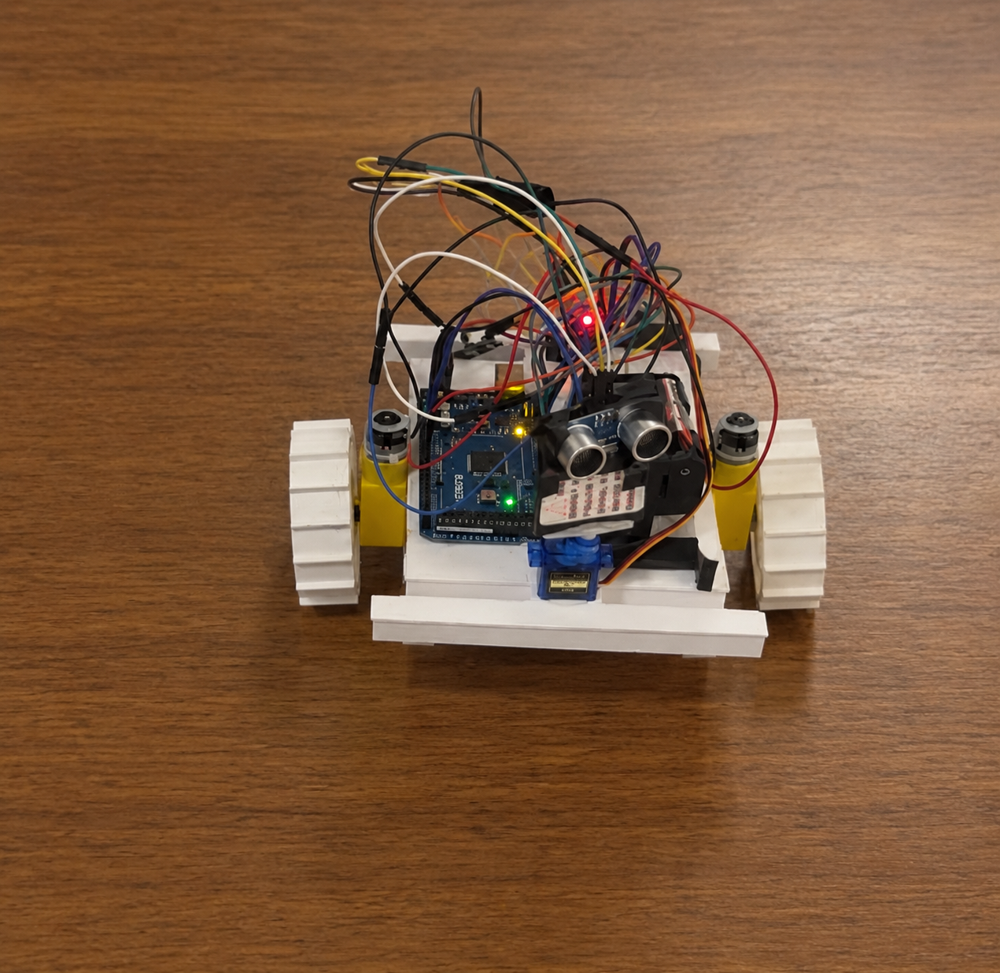
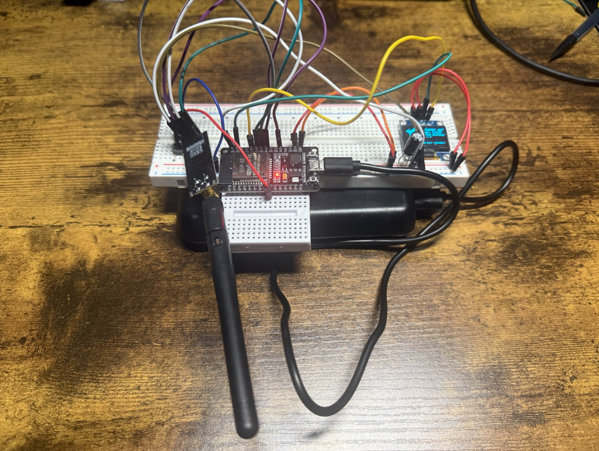

ELECTRONICS / EMBEDDED SYSTEMS / EXPERIMENTATION
Small independent projects I've built to explore electronics, embedded systems, sensors, wireless communication, and hands-on problem solving outside the classroom.

EMBEDDED SYSTEMS / SENSORS
A small autonomous rover built to navigate around obstacles using ultrasonic distance sensing and simple decision logic.
While moving forward, the rover uses an ultrasonic sensor to check the space ahead. When an obstacle is detected, the rover stops and backs away slightly.
The sensor then turns to check the surrounding directions. The rover compares the available space, turns toward the clearer path, and continues moving.

ESP32 / RF / WIRELESS
An ESP32-based experimental setup used to explore Wi-Fi, Bluetooth, and wireless interference behavior.
I assembled and configured the hardware to experiment with wireless communication and interference using my own equipment in a controlled environment.
The software was based on publicly available code that I followed and adapted for the hardware setup. The project was used purely as a hands-on learning experiment rather than as an original software project.
Testing was limited to my own devices and equipment for controlled experimentation and learning.
ALWAYS EXPERIMENTING
These projects are smaller than my primary engineering work, but they give me a way to experiment with hardware, electronics, and ideas outside of structured coursework.
View Engineering Projects